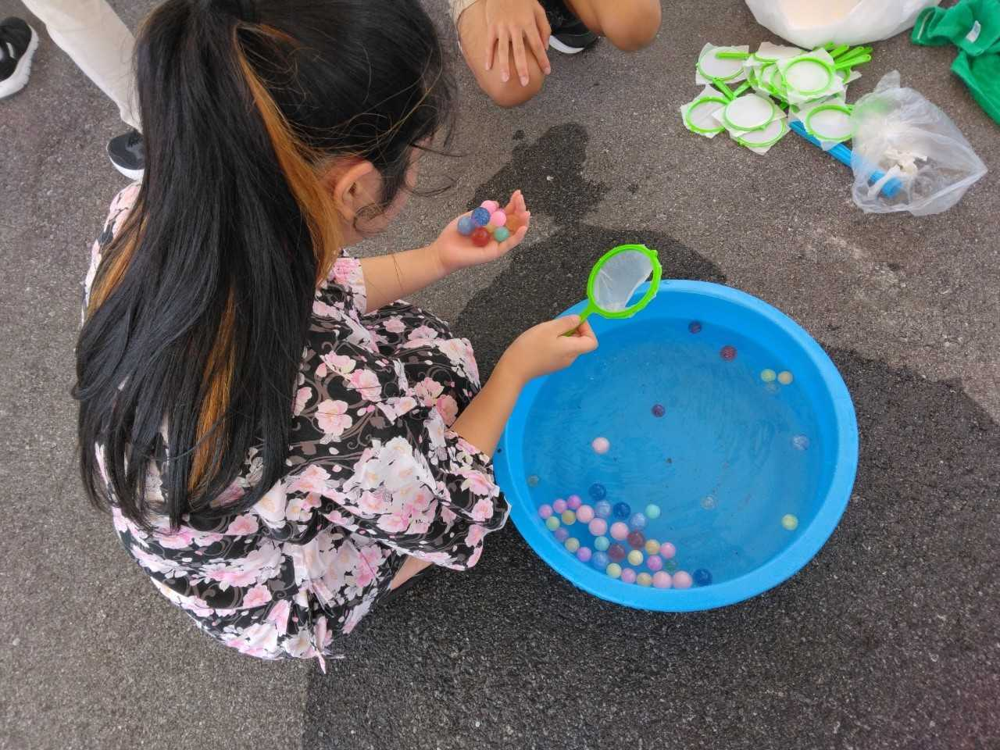
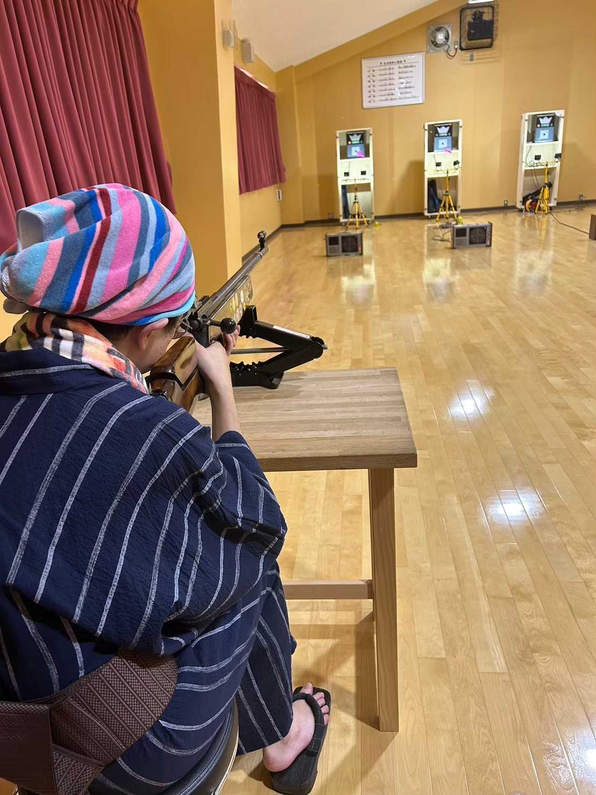
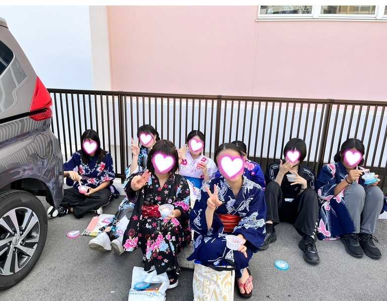

仙台育英沖縄高等学校
夕涼み会
夕涼み会の日は、その日だけ浴衣で登校することができます。
その日は、射的やビンゴゲーム、風船釣りをしました。ほかにも、一番印象に残っているのは、スイカ割です。
一年生と二年生が協力し合って割ったスイカは、とてもおいしくて印象に残っています。
夏祭りゲームでは、それぞれのゲームに点数が設置されており、獲得点数によってお菓子がもらえます。
生徒たちは、欲しいお菓子を獲得するために、真剣にゲームに取り組む様子が見られました。
願い事がかかれた短冊🎋
スーパーボールすくい
射的中
みんなでアイスを食べました
過去の開催日時
2２０２３年７月１９日 第一回夕涼み会
２０２４年度７月１２日 第二回夕涼み会